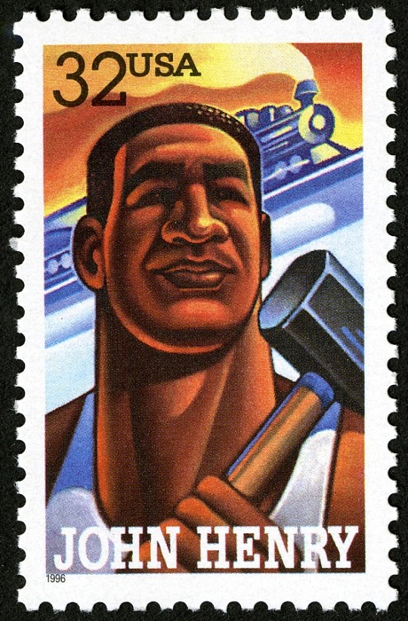

|  |
The ballad of John Henry is an Afro-American folk song that originated in the 1870’s. While there is significant variety in folklore overtime, the legend features John Henry, a steel driver working for the C&O railroad company. He outcompetes a steam powered drill that was designed to replace him and his fellow workers in a race through a mountain. While victorious, he collapses and dies due to exhaustion with his hammer in his hand. John Henry’s Ballad dipicts how technology impacts marginalized populations and was often popularized in periods of uncertainty for laborers. He was featured on a stamp in 1996 and the Ballad of John Henry's relevance has persisted in american culture overtime. |